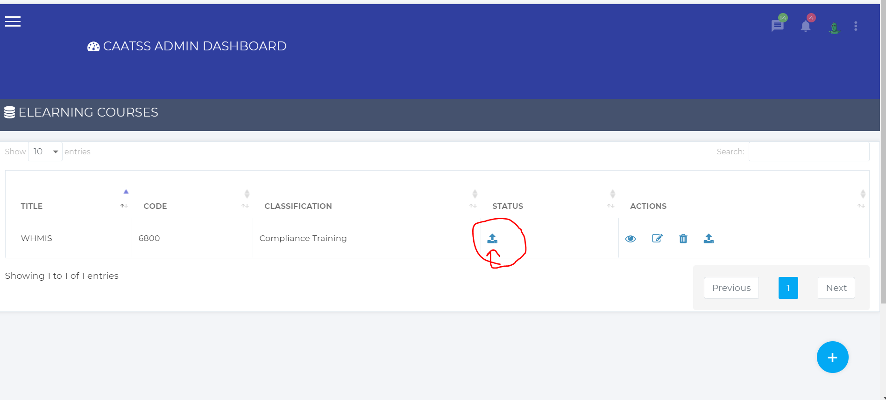
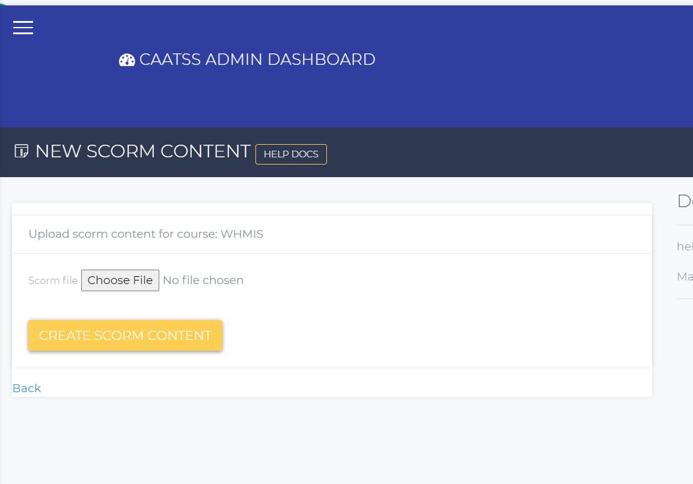
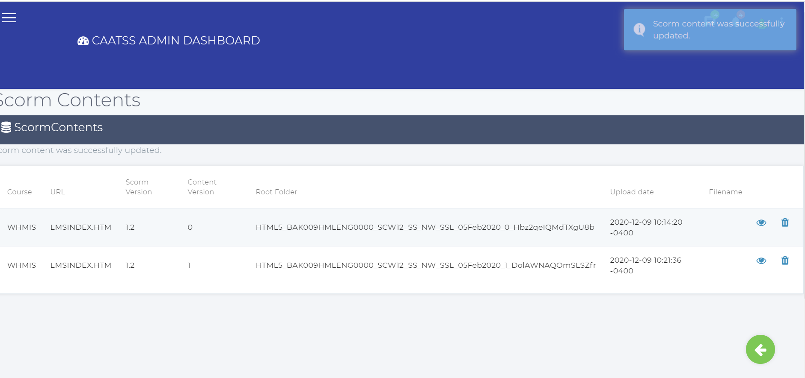
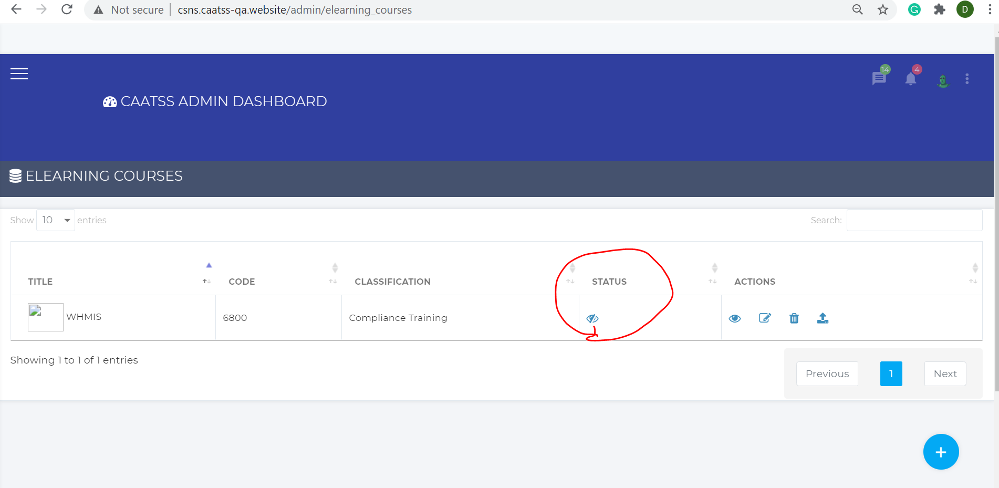
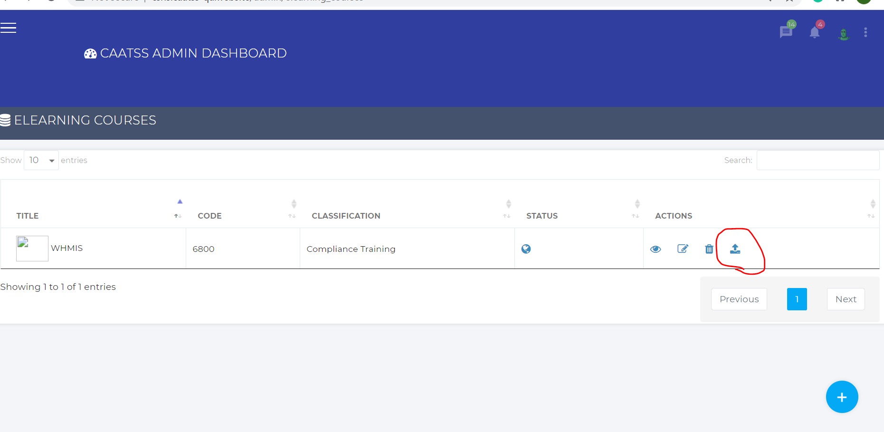
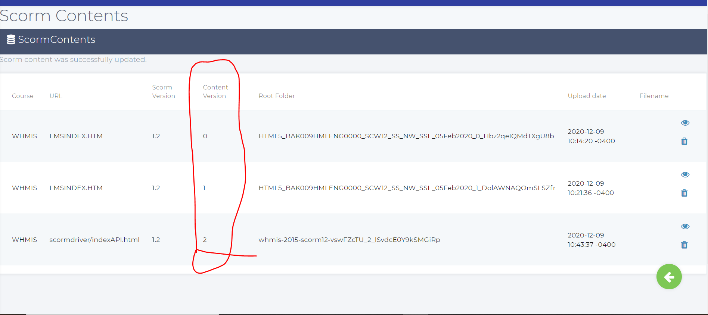

What does the each field means on the create eLearning course??
The create eLearning course form fields are same as the create instructor-led course fieds. Please click on the
Create instructor-led course Form Fields. The create and edit functionality is the same as instructor-led courses.
Once you have created the eLearning course, you can see that course on the list page of the eLearning courses.
You need to upload the content in order to publish the eLearning course.
How to upload the course content??
Click on the upload icon as shwon in the below picture to upload the content.

This action will redirect you to the upload SCORM content page. Browse to the content location and click on the create SCORM content button. The uploading time is based on the size of the zip file. If it is taking more than expected or if you run into any errors, contact the techsupport team for CAATSS.

After the upload is successful, you will be redirected to the SCORM content page. On this page, you can find SCORM version, Content version, upload date, course name etc. You can also delete the content, only when there are no students registered for the online course. Refer to the below image.

From the SCORM content page, click on the green icon to navigate back to the list of eLearning courses page.
After you upload the cotetnt you will be able to publish the course. Once you publish the course, it will be visible to end-users

How to update the content for the eLearning course when the course is published??
To update content has the same steps as uploading it in the first place. As shwon in the below picture, click on the upload link from the list of eLearning courses page. After that all the other steps are same as explained in the how to upload the course content?

How can i track the content versions for single course?
When you upload a new content for any course, the system assigns a version number to that course like o,1,2, etc. You can see these versions of the perticular course from the SCORM content page as shown below.
